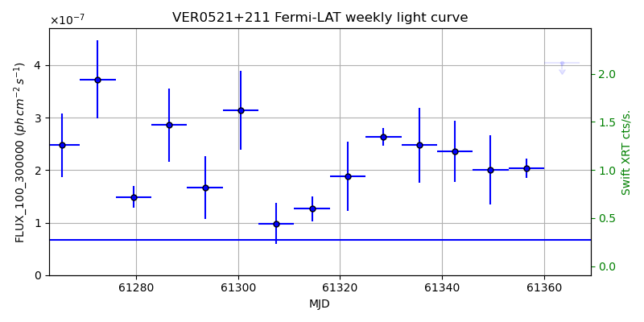
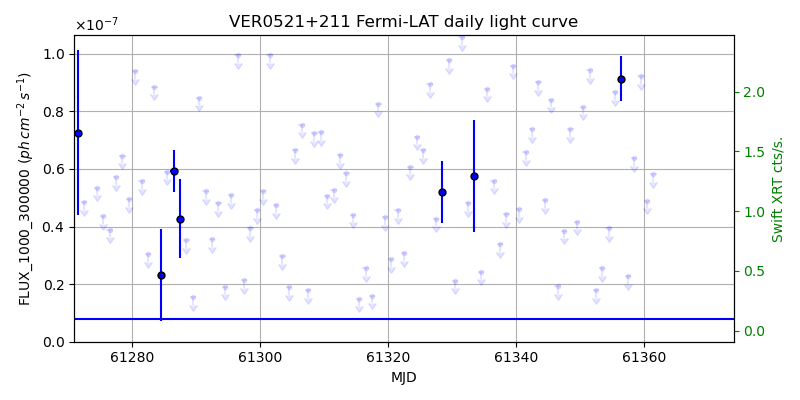
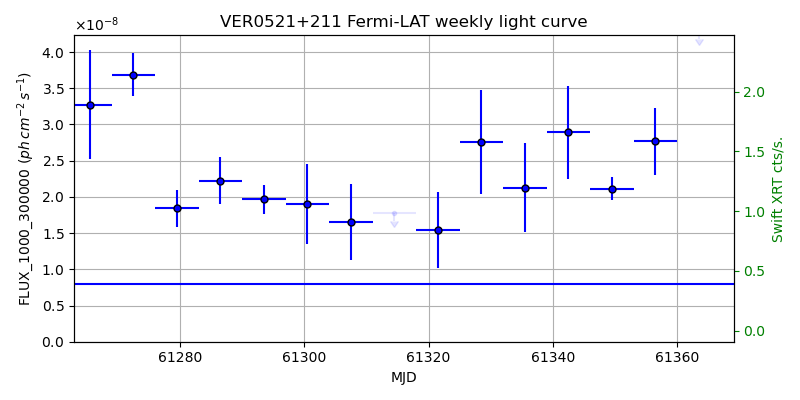

LAT Lightcurve site: https://fermi.gsfc.nasa.gov/ssc/data/access/lat/msl_lc/source/VER_0521p211
Swift site: https://www.swift.psu.edu/monitoring/source.php?source=VERJ0521+212
NED: Query
Time of last update of this page: UT: 2026-11-20 16:16 (MJD: 61364.678)
| Property | Value |
|---|---|
| R.A. | 5:21:46.08 |
| Dec. | 21:12:50.4 |
| z | 0.108 |
| 3FGL SpectrumType | PowerLaw |
| 3FGL PL Index | 1.92 |
| 3FGL Flux_100_300000 | 6.73e-08 1 / (s cm2) |
| 3FGL Flux_1000_300000 | 8.00e-09 1 / (s cm2) |
| 3FGL Flux >200 GeV | 5.96e-11 1 / (s cm2) |
| 3FGL Extrap. Crab >200 GeV | 0.25 |
| 3FGL Flux After EBL Absorption >200GeV | 3.54e-11 1 / (s cm2) |
| 3FGL EBL Crab Fraction >200GeV | 0.15 |
| MJD | dMJD | Flux | dFlux | Frac3FGL | FracCrab>200GeV | EBLFracCrab>200GeV |
|---|---|---|---|---|---|---|
| 61359.50 | 0.50 | 3.16e-07 | 0.00e+00 | 0.00 | 0.00 | 0.00 |
| 61360.50 | 0.50 | 2.89e-07 | 0.00e+00 | 0.00 | 0.00 | 0.00 |
| 61361.50 | 0.50 | 6.77e-07 | 0.00e+00 | 0.00 | 0.00 | 0.00 |
| 61362.50 | 0.50 | 2.85e-06 | 0.00e+00 | 0.00 | 0.00 | 0.00 |
| 61363.50 | 0.50 | 5.33e-06 | 0.00e+00 | 0.00 | 0.00 | 0.00 |

| MJD | dMJD | Flux | dFlux | Frac3FGL | FracCrab>200GeV | EBLFracCrab>200GeV |
|---|---|---|---|---|---|---|
| 61328.50 | 3.50 | 2.63e-07 | 1.69e-08 | 3.90 | 0.99 | 0.59 |
| 61335.50 | 3.50 | 2.47e-07 | 7.17e-08 | 3.67 | 0.94 | 0.56 |
| 61342.50 | 3.50 | 2.35e-07 | 5.81e-08 | 3.49 | 0.89 | 0.53 |
| 61349.50 | 3.50 | 2.00e-07 | 6.63e-08 | 2.97 | 0.76 | 0.45 |
| 61356.50 | 3.50 | 2.03e-07 | 1.90e-08 | 3.02 | 0.77 | 0.46 |

| MJD | dMJD | Flux | dFlux | Frac3FGL | FracCrab>200GeV | EBLFracCrab>200GeV |
|---|---|---|---|---|---|---|
| 61359.50 | 0.50 | 9.22e-08 | 0.00e+00 | 0.00 | 0.00 | 0.00 |
| 61360.50 | 0.50 | 4.90e-08 | 0.00e+00 | 0.00 | 0.00 | 0.00 |
| 61361.50 | 0.50 | 5.83e-08 | 0.00e+00 | 0.00 | 0.00 | 0.00 |
| 61362.50 | 0.50 | 8.45e-07 | 0.00e+00 | 0.00 | 0.00 | 0.00 |
| 61363.50 | 0.50 | 1.51e-06 | 0.00e+00 | 0.00 | 0.00 | 0.00 |

| MJD | dMJD | Flux | dFlux | Frac3FGL | FracCrab>200GeV | EBLFracCrab>200GeV |
|---|---|---|---|---|---|---|
| 61328.50 | 3.50 | 2.75e-08 | 7.19e-09 | 3.44 | 0.88 | 0.52 |
| 61335.50 | 3.50 | 2.13e-08 | 6.11e-09 | 2.66 | 0.68 | 0.40 |
| 61342.50 | 3.50 | 2.89e-08 | 6.39e-09 | 3.61 | 0.92 | 0.55 |
| 61349.50 | 3.50 | 2.11e-08 | 1.62e-09 | 2.64 | 0.67 | 0.40 |
| 61356.50 | 3.50 | 2.77e-08 | 4.67e-09 | 3.46 | 0.88 | 0.52 |
--------------------------------------------------------- Using user-supplied coords: 5:21:46.08 21:12:50.4 2000 --------------------------------------------------------- FLWO UT night of: 2026-11-21 Local Sid. @ Midnight: 03:37 Sunset (-15.0) (local, UT): 18:33 01:33 Sunrise (-15.0) (local, UT): 05:47 12:47 Moonrise (local, UT): Moonset (local, UT): 03:40 10:40 Moon phase: 0.85 --------------------------------------------------------- AzTime LSID UT Obj_el Obj_az Mn_el Mn_az Sep. --------------------------------------------------------- 18:33 22:09 01:33 -2.2 62.3 47.9 117.4 70.3 19:03 22:39 02:03 2.4 66.3 53.3 125.0 70.1 19:33 23:09 02:33 8.2 70.0 58.2 134.7 69.9 20:03 23:39 03:03 14.3 73.6 62.3 146.9 69.7 20:33 00:09 03:33 20.4 77.0 65.1 162.1 69.5 21:03 00:39 04:03 26.7 80.4 66.3 179.7 69.4 21:33 01:09 04:33 33.0 83.9 65.4 197.5 69.2 22:03 01:39 05:03 39.4 87.5 62.9 213.2 69.0 22:33 02:09 05:33 45.8 91.4 59.0 225.9 68.8 23:03 02:39 06:03 52.2 95.8 54.2 235.9 68.6 23:33 03:09 06:33 58.5 101.1 48.9 243.9 68.4 00:03 03:39 07:03 64.7 108.0 43.2 250.4 68.2 00:33 04:10 07:33 70.6 118.1 37.3 255.9 68.0 01:03 04:40 08:03 75.8 134.6 31.2 260.7 67.8 01:33 05:10 08:33 79.2 163.4 25.1 265.1 67.5 02:03 05:40 09:03 78.9 200.9 19.0 269.2 67.3 02:33 06:10 09:33 75.2 228.0 12.9 273.0 67.0 03:03 06:40 10:03 69.9 243.4 6.8 276.9 66.8 03:33 07:10 10:33 63.9 253.0 1.0 280.7 66.5 04:03 07:40 11:03 57.7 259.6 -4.9 284.7 66.2 04:33 08:10 11:33 51.4 264.8 -11.1 288.8 65.9 05:03 08:40 12:03 45.0 269.1 -16.8 293.2 65.6 05:33 09:10 12:33 38.6 273.0 -22.3 298.1 65.2 05:47 09:25 12:47 35.6 274.7 -24.8 300.5 65.1 --------------------------------------------------------- Dark hours >55 deg.: 0.59 srcstart (UT): 2026-11-21 10:40 srcend (UT): 2026-11-21 11:15